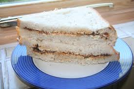

Vegemite Sandwhich

discription
The Vegemite sandwhich is a aussie classic, it is cheap yet tasty. And id your an aussie its easy to make, if your not, well then follow this recipe and you should be set.
Ingredients
- 2 slices of soft white bread.
- Vegemite.
- butter
Steps
- Apply a generous amount of butter to both slices of bread.
- Using a butter knife gather a small amount of vegemite and start to spread it on one of your slices of bread.
- Continue to spread your vegemite across so that the is a farily even and light brown layer across the whole slice of bread.
- It is important that you dont use to much vegemite! It should be applied so that you can still easily see the butter beneath.
Home